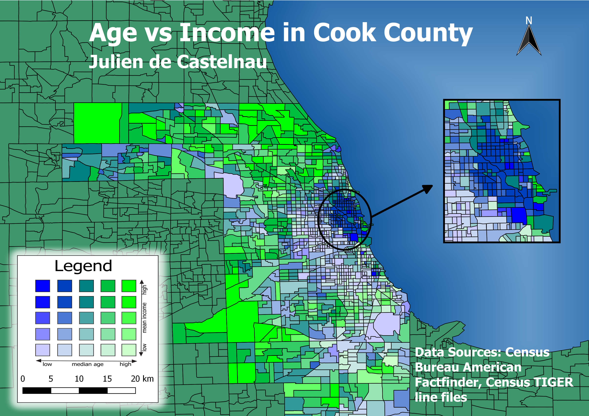

Intro
This page is dedicated to showcasing the GIS projects I have worked on so far at NEIU.GIS 2 - Camping Places in the Great lakes Region
This project was completed with Hannah O'Sullivan, Justin Nicholson, and myself for our Multiple Criteria Evaluation GIS II final project. After Justin and Hannah spent a week in Belize, they came up with the idea of doing an MCE on camping areas in the United States. We initally planned to have 6 criteria: remoteness of location, topographic features/elevation, forest cover, proximity to lakes and rivers, wildlife, and weather, but in the end, we settled with only three criteria: forest cover, proximity to rivers, and distance from highways (which would have been topographic features, if the area we had chosen wasn't so flat.) ArcGIS tools like Map Algebra, Euclidean Distance, Clip, Mosaic, and more were used to complete the project. The final map with all of the individual criteria maps combined using Map Algebra is pictured below, with a scoring system of 0 to 10, 0 being a completely undesirable location and 10 being the most desireable.The presentation for the project can be found here.

Legend: 0: | 0-3.33: | 3.33-6.31372549: | 6.313725491-8: | 8.0001-10:
GIS 3 - Python Project
This Python script was written with the ArcPy module for ArcGIS, and essentially "preprocesses" a set of feature classes within a specified workspace. That is, it converts the extent of all files to that of a specified feature class, and the projection to a specified spatial reference. The toolbox along with the .py file can be downloaded below.GIS 3 - QGIS Map
This map was created in QGIS to showcase the relationship between median age and mean income within Cook County using a variety of special mapping techniques within QGIS. The data was graphed with a bivariate value-by-alpha map and the water's three-dimensional/textured appearance was made with a combination of Inverted Polygon and Shapeburst fill.